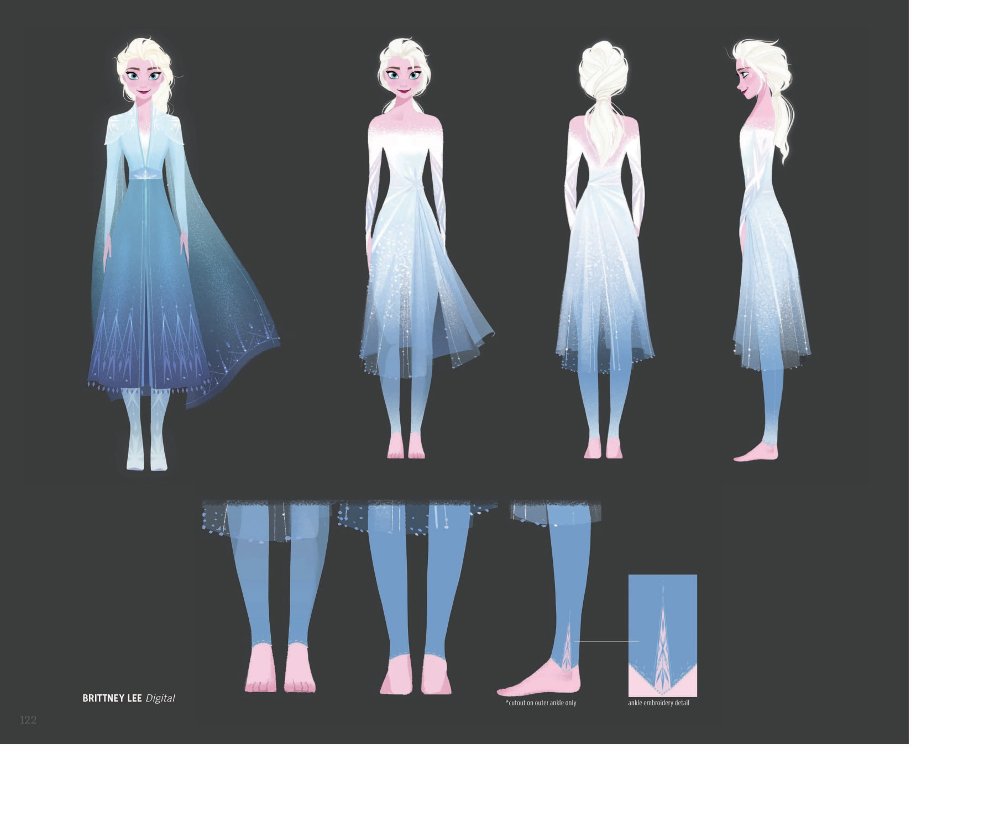
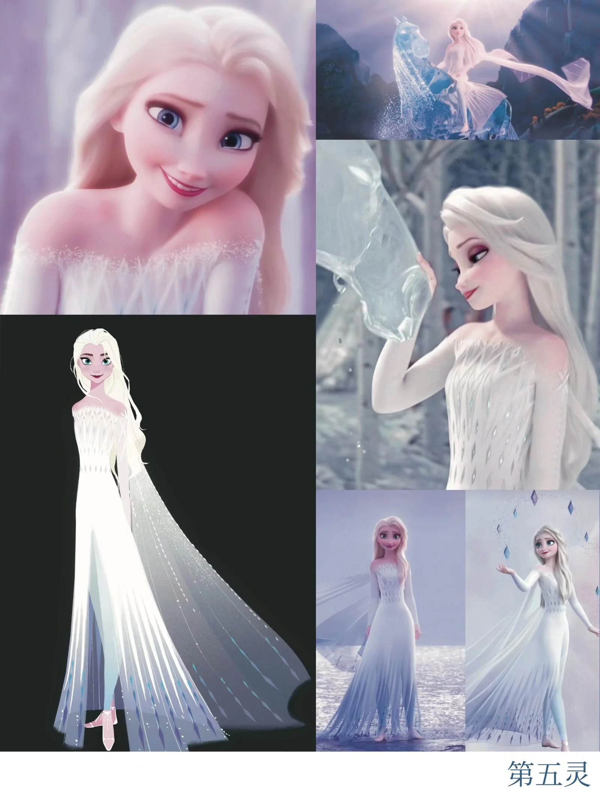

F2 故事线 · 三幕
📖 这一页讲什么
F2 把艾莎的弧光推向了「与自然同体」的终局。本页按三幕串起她的 F2 旅程：听见呼唤（不安）→ 进入魔法森林（真相）→ 化为自然之灵（归位）。三幕背后，是她从「阿伦黛尔的女王」走向「连接人与自然的桥」的一次身份重塑。
🎭 第一幕 · 呼唤与不安（动摇）

F2 开场的艾莎是加冕三年的女王。她在夜里听见一缕遥远的、似曾相识的声音——《Into the Unknown》。她想忽视却做不到。本能想回应，又害怕回应：她怕自己又一次成为妹妹的麻烦，又一次把家族秘密掀开。
《Into the Unknown》承接《Let It Go》——上一次是「释放」，这一次是「被召唤」。艾莎再次出发，而这一次，没有人能替她决定要不要走。
心理动机：在「保护安娜」与「回应自己」之间撕裂。她怕的不是危险本身，而是「又让安娜为我担心」。角色变化：从「安于王座的姐姐」变成「被真相召唤的旅人」。她必须独自面对：自己的魔法，到底从哪里来。
🎭 第二幕 · 魔法森林与真相（追溯）


进入魔法森林，艾莎一步步揭开父母过去——母亲 Iduna 来自北地的魔法一族，父亲 Agnarr 是阿伦黛尔的王子，两人的相遇与联姻本身就是一段禁忌。艾莎的冰雪之力源自母亲血脉、源自与魔法森林的羁绊——这是她身世的真相，也是父母用生命替她保守的秘密。
真相尽头，艾莎听见母亲 Iduna 的歌《Show Yourself》。「我在这里」——母亲从未离开，她就在魔法里，在她每一次施放魔法的指尖上。艾莎终于明白自己不是「怪物」，而是连接人与自然的「第五元素」。
心理动机：追溯「我为什么这样」的答案。她不是在「追寻真相」，而是在「找自己」。角色变化：从「被魔法追着跑的女孩」变成「认出自己是谁的人」。她不再问「魔法从哪来」，而是问「我能用它做什么」。
📖 设定集：Dark Sea 与水灵 Nokk
F2 中最具视觉冲击力的场景之一，是艾莎在 Dark Sea（暗海）中与水灵 Nokk 的相遇。设定集专门用两页拆解了这段的服装设计与动作设计：


视觉特效总监 Steve Goldberg 描述了这段的技术挑战：艾莎要冻住的不再是 F1 中平静的峡湾水面，而是 Dark Sea 巨大的冲击波。她的力量在量级上实现了飞跃——从「控制」到「征服」，这正是她走向第五元素的关键一步。
🎭 第三幕 · 自然之灵与各自为王（归位）


真相揭开后，艾莎没有回到王座。她选择留在魔法森林，化为连接人类与自然的「第五元素精灵」。这是她最极致的「reveal」——她不再是被关在王宫里的女王，而是与冰雪河流共呼吸的精灵。她终于不需要手套、不需要披风、不需要把魔法藏起来了。
安娜在阿伦黛尔加冕为新女王。姐妹物理上分离，却通过魔法森林与王宫之间的桥梁始终相连。这是 F1 结尾姐妹在阳台滑冰那一幕的延续：她们各自成为自己，却从来不是一个人。
心理动机：完成「我是谁」的最终拼图。不是为了权力，不是为了责任，而是为了「我应该在这里」。角色变化：从「阿伦黛尔的女王」变成「自然之灵」。她的身份不再是政治性的，而是存在性的——她就是冰雪，冰雪就是她。
F2 的结尾比 F1 更安静。它没有欢呼，只有风穿过魔法森林的声音。这是艾莎真正「做自己」的结局——她已经不需要「放手」，她就是她自己。